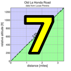
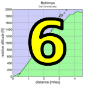

|
 |
 |
RSVP for today's climb after the previous week's climb!
1 line up at front, 4 towards back. |
| results? | right here! |
| profile |  |
| distance | 4.46 miles (7.2 km) |
| climbing | 1933 ft (589 meters) |
| grade | 8.24% |
| where? | see below |
| when? | 07 Nov 2015 |
| what time | check-in 9:00 to 10:00 climb starts @ 10:10 |
| RSVP | check back later! |
| how? |  |
| how much? | $10 (free for juniors and those with volunteer credit) |
| why? | Ask not why; just do! |
| coordinator | |
| volunteers | sign up! |
| aerial view | Google Earth |
| weather | Bay area winds |
| deja-vu? | 1998(4) |
| route map | |
Sorry, folks! Our insurance requires all riders wear helmets during the climb, and we follow the USA Cycling rule against ear buds or other head phones. Rock to tunes before the climb, perhaps, but we need riders to pay attention to what's happening during the climb...
As in 2007, we'll meet at Saratoga Elementary School near Oak and Fourth in Saragoga. Here's a map. At 10:10, we'll ride together to the cemetary at the intersection of 6th and Bohlman (see map). Then after regrouping, and indulging ourselves with a considerable dose of denial at the pain which follows, we'll head up the hill.
Navigation this year is simple -- it's Bohlman all the way. Ironically, the place where people have taken a wrong turn is approaching the finish. There's a right turn here which may seem attractive. Don't take it.
Parking:No rider parking at the school. There's plenty of parking in Saratoga. Please park away from the school -- there's plenty of options! This is suburbia: parker's paradise.
Toilets:Toilets are available at numerous businesses in the town, or at Wildwood Park on 4th a block across Hwy 9.
Volunteers make Low-Key tick! Without them, we no longer function. Please sign up for any week in the series using our volunteer form! Thanks!!!
Low-Key is all about a group of friends riding up a hill together. It's like any other informal group ride, except we time you to the top and report the results on our web site. But we have no road closures, no lead vehicle, no follow vehicle. We are traffic, sharing the roads with other traffic, following the laws and courtesy which applies to traffic. This includes riding to the right of the road when practicable, and not crossing double yellows to pass riders or to get through corners faster. We're each responsible for our own actions out there, on and off the bike, both as users of the road as as courteous visitors to the neighborhoods we pass through. "Ceci n'est pas un race".
{kind=link}